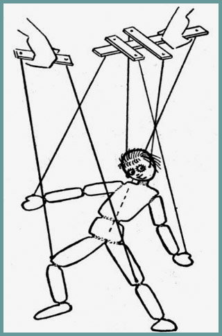

3. Teatro de Marionetes: As crianças podem criar e contar histórias com personagens virtuais.
Dicas:
Criação de Roteiros: Dê sugestões para que as crianças criem histórias com começo, meio e fim, explorando temas como amizade, aventura e superação.
Customização de Personagens: Ofereça diversas opções de personalização de marionetes, incluindo trajes, expressões e até vozes, para incentivar a originalidade nas histórias.
Partilha de Histórias: Permita que as crianças gravem e partilhem os seus teatros virtuais com amigos e familiares, fomentando a confiança e a expressão criativa.
